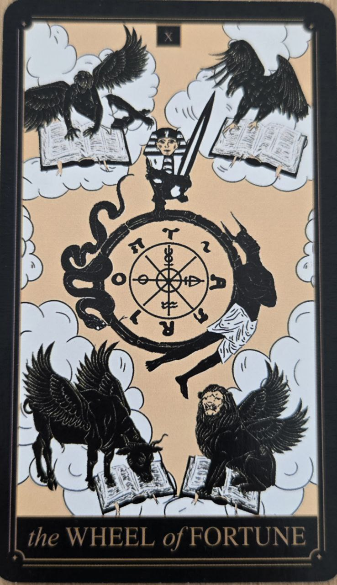

Koleso šťastia predstavuje zmenu, cykly a neustály pohyb života. Pripomína, že nič nezostáva navždy rovnaké a každá situácia sa časom vyvíja.
Táto karta často prichádza v obdobiach významných zmien alebo nečakaných udalostí.
Karta symbolizuje obraty osudu, nové príležitosti a prirodzené životné cykly. Naznačuje, že udalosti sa môžu vyvíjať spôsobom, ktorý nemožno úplne kontrolovať.
Pripomína tiež, že po náročných obdobiach často prichádzajú priaznivejšie časy.
Ústredným prvkom je veľké otáčajúce sa koleso, ktoré predstavuje neustálu premenu života.
Bytosti alebo symboly umiestnené okolo kolesa naznačujú rôzne fázy rastu, úspechu a zmien.
Koleso šťastia je jednou z kariet, ktoré najviac zdôrazňujú, že život nie je úplne predvídateľný a nie všetko závisí od našej vôle.